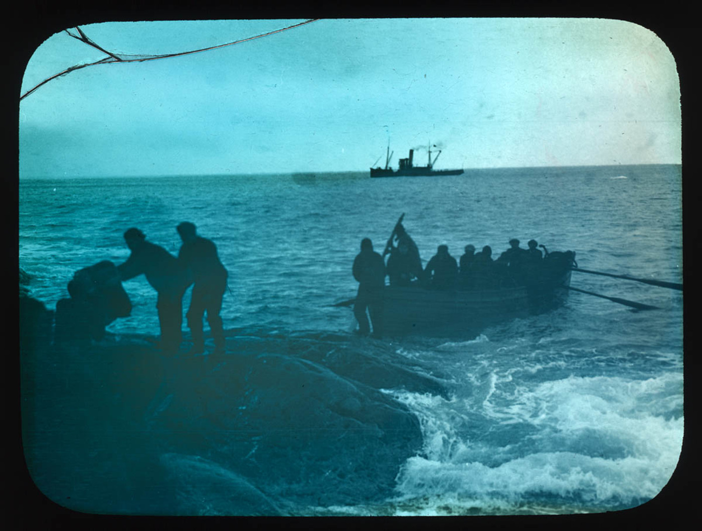

Chapter 20
The Men Under the Upturned Boats
But his mind was already moving forward, to the next task, the next challenge, the next group of men who were waiting for someone to come.
On 24 April 1916, the James Caird disappeared over the horizon, and twenty-two men turned away from the sea to face the rocks of Elephant Island. At that same hour, Thomas Orde-Lees, the expedition’s storekeeper, opened his diary and began recording the construction of what they called the Snuggery—a shelter made by upturning the two remaining lifeboats on low walls of stone. The departure of the six men in the twenty-two-foot boat represented hope, a desperate calculation that someone might reach South Georgia and bring back rescue. The construction of the Snuggery represented its opposite: the admission that hope might fail, that winter was coming, and that the twenty-two would have to live through it alone.
The crew had remained camped on the ice in the hopes that the floe would bring them closer to one of various islands; in April, they had set off in the Endurance’s three ship’s boats and eventually landed on Elephant Island. Because the island was remote and rarely visited, Shackleton had decided that help needed to be sought.
Point Wild, as they named their landing site in honor of their commander Frank Wild, offered nothing but a narrow strip of stony beach backed by a sheer cliff of ice and rock. The island was remote and rarely visited. No ship would come there by accident. If rescue came, it would come because Shackleton succeeded, and because someone in South Georgia or the Falklands cared enough to send a vessel into the Weddell Sea during the southern winter—an undertaking that most experienced mariners considered suicidal.
Wild understood the mathematics of their situation. He had rations for perhaps ten weeks if they ate sparingly. After that, they would live or die by what they could hunt—seal and penguin, mostly, with the occasional fish or limpet if they could reach the water’s edge. The island held no vegetation worth eating, no firewood, no shelter from the wind except what they built themselves. The temperature would drop, through May and June and July, to twenty-nine degrees below zero. The wind would blow without ceasing, funneling through the cliffs above their camp, driving snow and spray into every crevice.
The two remaining boats—the Dudley Docker and the Stancomb Wills—became the roof of the Snuggery. The men dragged them up the beach, turned them over, and rested their keels on walls of stone and ice. The space beneath was low and narrow, barely high enough to sit upright. The men slept on the ground, packed together, their bodies the only source of warmth. The floor was rock and gravel, covered with a thin layer of straw and blankets salvaged from the Endurance. The walls leaked wind. The floor leaked water. The air inside was thick with the smell of blubber, smoke, and unwashed men.
But it was shelter, after a fashion. And shelter was the difference between surviving the night and dying in it.
The construction took three days. Orde-Lees noted the irony of their situation: they had crossed the Antarctic Circle to explore a continent, and now they huddled under overturned lifeboats on a rock at the edge of that continent, waiting for someone to bring them home. The exploration was over. The survival had begun.
Wild established a routine. The men rose at seven, if rising was the word for crawling out of sleeping bags into air cold enough to freeze breath. Breakfast was a thin stew of seal meat and powdered milk, with a hard biscuit if the day’s ration allowed. Then the work began: hunting parties to scout the beach for seals or penguins, sentries to watch the horizon for ships, maintenance crews to repair the Snuggery’s walls and clear the snow that drifted against the entrance. Lunch was whatever they had killed that morning, or whatever remained from the day before. Dinner was the same. The portions were measured, weighed, recorded in Orde-Lees’s ledger. Every man received the same amount, regardless of his size or appetite. There were no seconds. There were no complaints—not aloud, at least.
The hunting parties were the critical variable. Seal and penguin were the only reliable sources of food, and the animals were not always present. Some days the beach was crowded with them, and the men killed more than they could eat, stripping the blubber for fuel and drying the meat for storage. Other days the beach was empty, and the hunters returned with nothing, their faces gray with cold and disappointment. The irregularity of the supply meant that the men never knew, from one day to the next, whether they would eat well or poorly. The uncertainty was a form of torture.
Alexander Macklin, the expedition’s doctor, kept his own diary. He recorded the cases of frostbite—the fingers and toes that turned black and numb, the skin that peeled away in strips. He recorded the minor injuries—the cuts and sprains and bruises that accumulated when men worked with frozen hands on slippery rocks. The psychological symptoms went into the ledger too: the silences, the irritability, the men who stopped talking and stared at the wall of the Snuggery for hours at a time. Macklin called it polar madness, though he knew the term was imprecise. Not madness, exactly. The slow erosion of hope.
Hubert Hudson, the navigator who had been assigned to the shore party, was the most severely affected. He had been depressed since the Endurance was crushed, his spirits sinking lower with each passing week. On Elephant Island, he withdrew almost entirely. He lay in his sleeping bag for hours, staring at the canvas, refusing to speak or move. Wild tried to rouse him with work, with conversation, with the promise of rescue. Hudson responded with monosyllables, if he responded at all. Macklin noted that Hudson seemed to have lost the will to survive—a dangerous condition in a place where survival required constant effort.
The others watched Hudson with a mixture of pity and fear. His condition was a mirror of their own potential futures. If rescue did not come, they might all end up like him: silent, immobile, waiting for death. The thought was never spoken aloud, but it hovered in the air of the Snuggery, a presence as real as the cold.
Frank Wild’s leadership was the counterweight. He was not a charismatic man in the way Shackleton was; he did not inspire devotion or awe. But he was steady, consistent, fair. He enforced the rules without favoritism. He made decisions and stuck to them. When disputes arose—and they did, often over food—he listened to both sides and then rendered his judgment. The men might grumble, but they obeyed. They obeyed because the alternative was chaos, and chaos meant death.
The most serious dispute came in late May, when the hunting parties returned empty-handed for three consecutive days. The rations were running low. Wild announced that the daily allowance would be reduced by a third. Several men objected, loudly. They argued that the reduction was unnecessary, that there was still food in reserve, that Wild was hoarding it for some future emergency that might never come. The argument escalated into shouting, then into shoving. For a moment, it seemed that the shore party might fracture into factions, each demanding its share.
Wild stepped between the disputants and raised his hand. He spoke quietly, but his voice carried through the Snuggery. He explained the mathematics: the food they had left, the number of days until spring, the likelihood that rescue would come before then. He acknowledged their hunger, their frustration, their fear. And then he reminded them of the alternative. If they ate their reserves now, they would starve later. If they starved, they would die. If they died, Shackleton’s rescue—when it came—would find only bodies.
The argument ended. The men returned to their places, muttering, but the muttering subsided into silence. The reduced rations were served, and eaten, and the Snuggery settled into an uneasy peace.
Macklin noted the incident in his diary. He called it a stress test of the social organism. The expedition had been a ship of men, bound together by discipline and hierarchy. Now the ship was gone, but the organism remained. Fragile, prone to fracture, but it held. Wild’s leadership was the glue.
June brought the deepest cold. The temperature dropped to twenty-nine degrees below zero, and the wind rose to hurricane force. The Snuggery shook with each gust, the boats creaking on their foundations, the snow driving through every crack. The men lay in their sleeping bags, wrapped in every piece of clothing they possessed, and waited for the storm to pass. It lasted four days.
During those days, the hunting parties could not go out. The sentries could not watch the horizon. The men could barely move. They lay in the dark, listening to the wind, thinking their own thoughts. Some prayed. Some cursed. Some recited poetry or sang songs to pass the time. Some simply slept, retreating into unconsciousness as a refuge from the cold.
When the storm broke, the beach was transformed. The snow had drifted into mountains, burying the entrance to the Snuggery. The men dug themselves out with their hands, then with shovels fashioned from scraps of metal. They emerged into a world of white, the sky pale gray, the sea a dark line at the edge of the ice. The temperature had risen slightly, but the wind still bit. The hunting parties went out, and returned with a seal—thin, undernourished, but alive. They killed it, butchered it, ate it. The meat was tough and stringy, but it was food.
The days began to blur together. Orde-Lees’s diary entries grew shorter, more repetitive. Fine day, one seal killed, rations normal. Cold wind from the south, no game. Storm, no hunting, reduced rations. The monotony was a form of anesthesia. The men stopped counting the days, stopped thinking about the future, stopped imagining what rescue might look like. They existed in the present: the cold, the hunger, the work, the sleep.
But the present was not static. A slow decline was underway. The men grew thinner, weaker. Their clothes wore out, their boots cracked, their hands and feet grew numb. The frostbite cases multiplied. Macklin amputated fingers and toes with a surgeon’s knife, without anesthetic, by the light of a blubber lamp. The patients gritted their teeth and endured. There was no other choice.
July brought a brief thaw. The temperature rose to just above freezing, and the snow began to melt. The Snuggery leaked, water dripping from the upturned boats onto the sleeping men. The floor turned to mud. The air grew thick with mold and mildew. The men joked about the Snuggery becoming the Sty, but the jokes were hollow. They were living in filth, and they knew it.

The psychological toll was harder to measure than the physical. Macklin recorded the symptoms: insomnia, irritability, depression, anxiety. Some men talked incessantly, filling the silence with words. Others fell silent for days at a time. Some picked fights over trivial matters—a misplaced spoon, a borrowed blanket, a snore in the night. Others withdrew entirely, refusing to engage with their companions. The social organism was fraying at the edges.
Wild watched and waited. He knew that morale was a finite resource, and that it was running low. He tried to replenish it with small gestures: a day off from work, an extra biscuit for a birthday, a story or a song in the evening. But the gestures were insufficient. The men needed something larger. They needed hope.
And hope, in this place, meant rescue.
The question of rescue was never far from their minds. Every day, the sentries scanned the horizon for ships. Every day, they saw nothing but ice and sky. The disappointment was cumulative, a weight that pressed down on them with each passing hour. They began to doubt. They began to wonder if Shackleton had made it, if the James Caird had survived the voyage, if anyone in the outside world knew or cared that they were there.
Wild did not share their doubts. Or, if he did, he did not show it. He maintained the position that rescue would come, that Shackleton would return, that they had only to wait. But waiting was not passive. It required preparation.
In late July, Wild called a meeting. He announced that if rescue had not arrived by the first of September, they would attempt to reach Deception Island in the Stancomb Wills. The island was about 150 miles to the southwest, and it had a whaling station where they might find help. The voyage would be dangerous—suicidal, some thought—but it was better than staying on Elephant Island and starving.
The announcement was met with silence. The men understood what it meant. They would have to row through freezing water, in an open boat, against the wind and current, with no guarantee of success. If they failed, they would die at sea. If they stayed, they would die on land. The choice was between two forms of death.
Wild gave the order to prepare the Stancomb Wills. The men began to gather supplies: food, water, fuel, blankets. They checked the boat’s hull, repaired the seams, tested the oars. The work gave them something to focus on, a task that required their attention. But the task was also a reminder of their desperation. They were preparing for a voyage that none of them expected to survive.
Macklin wrote in his diary that they were like men under sentence of death, waiting for the executioner. If the executioner did not come, they must go to him.
The metaphor was apt. The men were trapped in a state of suspended animation, neither living nor dying, but simply existing. The waiting was the punishment. The uncertainty was the torture. They had no control over their fate. They could only wait, and watch, and hope.
Hope was the cruelest thing. It kept them alive, but it also kept them suffering. If they had known that rescue would never come, they might have given up, accepted their fate, died in peace. But hope would not let them die. It forced them to keep living, keep struggling, keep believing that something might change—a form of rationed hope, distributed in small doses, just enough to keep them going but not enough to satisfy.
The diaries of Orde-Lees, Macklin, and Hurley tell the story of those months in fragments. Orde-Lees recorded the temperatures, the rations, the daily routine. Macklin recorded the medical cases, the psychological symptoms, the social dynamics. Hurley, the photographer, recorded what he could not photograph: the gray sky, the white ice, the black water, the faces of men who had given up on everything but survival. He wrote of the silence that settled over the Snuggery at night, broken only by the wind and the breathing of twenty-two men.
The silence was the hardest thing. In the absence of conversation, the men were left alone with their thoughts. And their thoughts were not pleasant. They thought of home, of families, of the lives they had left behind. They thought of the mistakes that had brought them here, the choices that had led them to this frozen rock at the bottom of the world. They thought of the future, and saw nothing.
August began with another storm. The wind howled, the snow piled against the walls, the men huddled in their bags and waited. The date for Wild’s deadline approached. The first of September was less than four weeks away. The Stancomb Wills sat on the beach, provisioned and ready, a dark reminder of what would happen if no ship appeared.
The hunting parties grew more desperate. They ranged farther along the shore, climbing over ridges of ice, searching for seals or penguins that might have wandered into reach. Sometimes they found them. Sometimes they did not. The rations continued to shrink. The men continued to weaken.
Orde-Lees noted in his diary that the suspense was worse than the hunger. The hunger was a physical sensation, familiar, manageable. The suspense was a mental weight, growing heavier with each passing day, pressing down on them from the moment they woke to the moment they slept. They were waiting for something that might never come. They were preparing for something they did not want to do. They were living in a state of constant, low-grade terror.
Wild maintained his routine. He inspected the camp each morning, checked the supplies, assigned the day’s tasks. He visited each man in turn, asking after his health, listening to his complaints, offering what comfort he could. He kept his own doubts hidden, locked away behind a mask of confidence. The men needed to believe that rescue was coming. If their commander doubted, they would doubt. And doubt, in this place, was the first step toward death.
The middle of August brought a break in the weather. The sky cleared, the wind dropped, the temperature rose to a few degrees below freezing. The men emerged from the Snuggery and blinked in the light. The beach was white with snow, the sea dark gray, the horizon sharp and clear. For the first time in days, they could see for miles.
The sentries took up their positions. They scanned the horizon, north and east, the directions from which a rescue ship might come. They saw nothing but ice and water, sky and snow. They watched all day, and into the evening, and saw nothing.
The next day was the same. And the next. The clear weather held, but no ship appeared. The men began to lose hope. They had known, rationally, that rescue might take months. But the clear weather had raised their expectations, and the disappointment was bitter.
Wild watched them sink into despair. He knew that he had to do something, say something, to keep them going. But he had no new information, no new promises to make. He could only repeat what he had said before: rescue would come, Shackleton would return, they had only to wait.
The waiting was the hardest part. The active struggle—the hunting, the building, the maintaining of the camp—gave them something to do, something to focus on. But the waiting was passive, a state of being rather than a state of doing. They had no control over when or if rescue would come. They could only exist, hour by hour, day by day, hoping that something would change.
The pressure of Wild’s order to prepare the Stancomb Wills for a final, suicidal voyage if no rescue came by spring hung over the camp like a cloud.